Vektor-Karten
Vektor-Karten Anzeige
Erstens: Eine sehr wichtige Einstellung wird direkt von der Werkzeugleiste gemacht.
 Dieser Button schaltet die Anzeige vonTexten an oder aus.
Dieser Button schaltet die Anzeige vonTexten an oder aus.
Im OpenGL Modus ist Text horizontal, wenn man den "Kurs-Voraus Modus" aktiviert hat.
Zweitens: Doppel-Klick auf irgendeinen Punkt auf der Vector-Karte bringt den Informations-Dialog, solange der Cursor nicht das geänderte Aussehen im Randbereich der Karte hat. Die gleiche Funktion hat "Objekteigenschaften anzeigen" vom Kontextmenü. Ein normaler Links-Klick zentriert hingegen die Karte an dem Punkt.
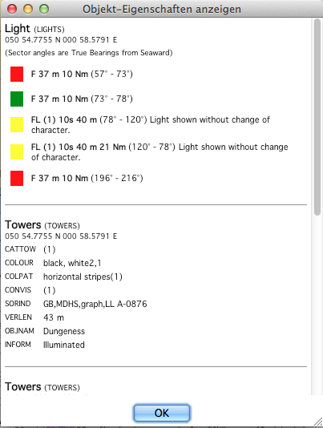
Das Beispiel oben zeigt einen Leuchturm in einer verkehrsreichen Gegend. Was genau gezeigt wird, hängt ab von der Beschreibung im Bild unten bei "Anzeige-Kategorien".
Drittens: Die Schrift für Vector Karten kann ausgewählt werden. Es gibt unter Einstellungen/Sprache/Schrift ein Textelement "Kartentexte" (ChartTexts), für das mit dem Button "Schriftart wählen" die Schrift eingestellt werden kann. Das ist zwar abhängig von der Karte, sollte aber verschiedene Schriftgrößen auf der Karte beeinflussen können.
Viertens: In den Einstellungen wird unter der Lasche Vektorkarten alles andere konfiguriert.

Anzeigekategorie
Der Navigator hat die Wahl unter drei vordefinierten verschiedenen Präsentationen der ENC Inhalte: Basis, Standard und Sonstige. OpenCPN hat außerdem die sehr flexibele Benutzerdefinierte Auswahl.
Basis
Wie der Name sagt, ein einfacher Basis-Überblick. Für die praktische Nutzung vielleicht zu wenig Details. Angezeigt werden Küstenlinien, Sicherheits-, Gefahrenzonen, Bojen, Verkehrstrennung usw. Die IMO klassifiziert diese Kategorie als Minimal-Stufe, die nicht bei der Anzeige ausgeblendet werden kann, da diese Informationen immer unter allen Umständen in allen geografischen Bereichen erforderlich sind.
Standard
Zeigt zusätzlich zu Basis Leuchtfeuer-Charakteristika für Leuchtbojen und Markierungen, zusätzliche Textbezeichnungen für Markierungen und an Land, aber vielleicht zu wenig Detail-Informationen für die meisten Anwender.
Sonstige
Zeigt eine Ansicht wie Standard, aber mit etwas mehr Details. Könnte als "Zeige alles Wichtige" beschrieben werden.
Benutzerdefinierte Auswahl (Mariner Standard)
Verwendet die Filterliste links, um exakt das anzuzeigen, was gewünscht wird. Es kann aus über 186 Filtern ausgewählt werden. Die dortigen Abkürzungen entsprechen dem IMO S57 Standard.
Sie können im Internet gefunden werden unter:
caris.com
s-57.com/
help.arcgis.com
S-57 Appendix A - IHO Object Catalog
Beachten Sie, daß die Benutzerdefinierte Auswahl eine größere Auswahl zuläßt, als bei geprüften ECDIS Systemen erlaubt. Es ist z.B. möglich, Basis Informationen auszublenden.
In der Benutzerdefinierten Auswahl sind folgende Kurzbefehlstasten möglich:
| T | Texte. Die sichtbaren Texte werden von den Einstellungen in den Vector Karten Tabellen beeinflußt. |
| L | Leuchtfeuer. Leuchttürme sowie Bojen usw. werden beeinflußt. |
| S | Tiefenangaben (Soundings) |
| R | Riffe. Beeinflußt Arten von Unterwasser-Hindernissen, die nicht zur Planung benötigt werden, wie Felsen, Wracks und sonstige Hindernisse. |
| A | Ankerbereiche. Das betrifft alle Informationen zum Ankern wie Untersee-Kabel, Pipelines, Bodengrund. |
| O | Karten Umrisse (Outlines) |
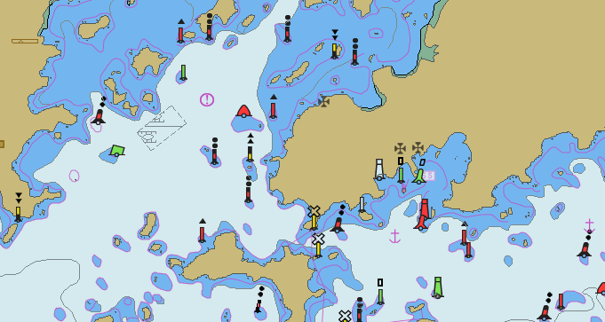
Warnung: Damit können aber auch wichtige Informationen ausgeblendet werden. Informieren Sie sich daher über die Abkürzungen unten, bevor Sie Einträge in der Liste deaktivieren.
Im Zweifel wählen Sie Sonstige oder verwenden den Alle auswählen Button.
Hier ein paar Beispiele zur Demonstration der hinter den Abkürzungen stehenden Struktur:
LNDARE = LANDAREA
TESARE = TERITORIAL SEA AREA
NAVLNE = NAVIGATION LINE
PIPOHD = PIPELINE OVERHEAD
SLOTOP = SLOPE TOPLINE
Jede Abkürzung hat also eine ausdrückliche offizielle Definition:
DEPCNT = DEPTH CONTOUR Eine Linie, die Punkte gleicher Wassertiefe verbindet, und manchmal stark von den tatsächlichen Tiefen abweicht, da zur Klarheit der Karte Symbole und andere Kartendetails und auch zur Verallgemeinerung der Darstellung umgangen werden. Diese Tiefenkonturen stellen daher oft nur eine Annäherung an die Linie gleicher Wassertiefe dar. Sie werden auch als Tiefenkurve bezeichnet.
Die vollständige Auflistung der Abkürzungen (Einträge mit Stern *) erst ab OpenCPN-Version 2.6, Abkürzungen in Kleinbuchstaben stammen aus Inland-ENC Spezifikationen):
| Abkürzung | Englisch | Deutsch |
| $AREAS | Cartographic area | Kartografischer Bereich |
| $COMPS | Compass | Kompaß-Rose auf der Karte |
| $CSYMB | Cartographic symbol | Kartografisches Symbol |
| $LINES | Cartographic line | Kartografische Linie |
| $TEXTS *) | Text string | Textzeichen (verboten für ENCs) |
| _extgn | Extended navigational add | (nicht in IHO Objekt Katalog V3.1 Nov. 2000 enthalten) |
| _texto | Text | (nicht in IHO Objekt Katalog V3.1 Nov. 2000 enthalten) |
| ACHARE | Anchorage area | Anker Bereiche |
| ACHBRT *) | Anchor berth | Ankerplatz |
| ADMARE *) | Administration area | Verwaltungsbereich |
| AIRARE *) | Airport/airfield | Flugplatz |
| BCNCAR | Beacon, cardinal | Seezeichen, Kardinalsystem |
| BCNISD | Beacon, isolated danger | Seezeichen, isolierte Gefahr (nur an der bezeichneten Stelle) |
| BCNLAT | Beacon, lateral | Seezeichen, Lateralsystem |
| BCNSAW *) | Beacon, safe water | Seezeichen, sicheres Fahrwasser |
| BCNSPP | Beacon, special purpose/general | Seezeichen, besonderer Zweck/allgemein |
| bcnwtw *) | Beacon | Seezeichen Binnengewässer |
| BERTHS *) | Berth | Liegeplatz |
| BOYCAR | Buoy, cardinal | Boje, Kardinalsystem |
| BOYINB | Buoy, installation | Boje, für Mooring |
| BOYISD | Buoy, isolated danger | Boje, isolierte Gefahr (nur an der bezeichneten Stelle) |
| BOYLAT | Buoy, lateral | Boje, Lateralsystem |
| BOYSAW | Buoy, safe water | Boje, sicheres Fahrwasser |
| BOYSPP | Buoy, special purpose/general | Boje, besonderer Zweck/allgemein |
| boywtw *) | Buoy | Boje Binnengewässer |
| BRIDGE | Bridge | Brücke |
| brqare *) | Source unknown | Quelle unbekannt |
| BRTFAC | Berthing facility | Kai, Mole (obsolet, ersetzt durch BERTHS) |
| BUAARE | Built-up area | bebauter Land-Bereich |
| BUIREL | Building, religious | religiöses Gebäude (obsolet, ersetzt durch BUISGL) |
| BUISGL | Building, single | Einzel-Gebäude |
| bunsta *) | Shelter station | Bunkerstation |
| C_AGGR *) | Aggregation | Kombiniertes Objekt |
| C_ASSO *) | Association | Zusammenfassendes Objekt |
| C_STAC *) | Stacked on/stacked under | Stapel-Reihenfolge von Objekten |
| CANALS | Canal | Kanal |
| CANBNK | Canal bank | Kanal-Ufer |
| CAUSWY | Causeway | Damm |
| CBLARE | Cable area | Bereich mit Untersee-Kabeln |
| CBLOHD | Cable, overhead | Kabeltrasse (mit Masten) |
| CBLSUB | Cable, submarine | Unterwasser-Kabeltrasse |
| CEMTRY *) | Cemetery | Friedhof (obsolet, ersetzt durch LNDMRK) |
| CGUSTA | Coastguard station | Küstenwache-Station |
| CHIMNY | Chimney | Schornstein (obsolet, ersetzt durch LNDMRK) |
| COALNE | Coastline | Küstenlinie |
| comare *) | Source unknown | Quelle unbekannt |
| CONVYR *) | Conveyor | Förderanlage |
| CONZNE | Contiguous zone | staatliche/territoriale Seegrenze |
| COSARE | Continental shelf area | kontinentaler Shelf-Bereich |
| CRANES | Crane | Kran |
| CTNARE | Caution area | Sicherheitsbereich (navigatorisch) |
| CTRPNT | Control point | Kontrollpunkt |
| CTSARE *) | Cargo transhipment area | Umschlagplatz |
| CURENT *) | Current | Strömung |
| CUSZNE | Custom zone | Zoll-Bereich |
| DAMCON | Dam | Barriere, Damm |
| DAYMAR *) | Daymark | Tagessicht Seezeichen |
| DEPARE | Depth area | Tiefenbereich |
| DEPCNT | Depth contour | Tiefenlinie |
| DISMAR | Distance mark | Entfernungsmarke |
| DMPGRD | Dumping ground | Verklappungsbereich |
| DOCARE *) | Dock area | Dock-Bereich |
| DRGARE | Dredged area | ausgebaggerter Bereich |
| DRYDOC | Dry dock | Trockendock |
| DSHAER *) | Dish aerial | Parabolantenne (obsolet, ersetzt durch LNDMRK) |
| DWRCTL *) | Deep water route center line | Tiefwasser-Fahrrinnenmitte |
| DWRTPT | Deep water route part | Tiefwasser-Route |
| DYKCON *) | Dyke | Deich, Damm |
| DYKCRW *) | Dyke crown | Deichkrone (obsolet, ersetzt durch SLOTOP) |
| excnst *) | Source unknown | Quelle unbekannt |
| EXEZNE | Exclusive economic zone | territoriale (staatliche) Zone |
| FAIRWY | Fairway | Schifffahrtsweg |
| FERYRT | Ferry route | Route für Fähren |
| FLASTK *) | Flare stack | Abfackelturm (obsolet, ersetzt durch LNDMRK) |
| FLGSTF *) | Flagstaff/Flagpole | Flaggenmast (obsolet, ersetzt durch LNDMRK) |
| FLODOC | Floating dock | Schwimmdock |
| FNCLNE | Fence/wall | natürliche oder künstliche Barriere (Zaun/Grenze) |
| FOGSIG | Fog signal | Nebelsignal |
| FORSTC | Fortified structure | militärische Verteidigungsanlage |
| FRPARE *) | Free port area | Freihafen |
| FSHFAC | Fishing facility | Fischergeräte im Flachwasser |
| FSHGRD | Fishing ground | Fischerei-Gebiet |
| FSHZNE | Fishery zone | Fischerei-Zone (staatlich reguliert) |
| GATCON | Gate | Wehr |
| GRIDRN *) | Gridiron | Grätingsteg |
| HRBARE *) | Harbour area, administrative | Hafenbereich |
| hrbbsn *) | Harbour, water area | Hafen, Wasserbereich |
| HRBFAC | Harbour facility | Hafen |
| HULKES *) | Hulk | Permanent verankertes Schiff |
| ICEARE *) | Ice area | Eis-Bereich |
| ICNARE *) | Incineration area | Abfall-Verbrennungsbereich |
| ISTZNE *) | Inshore traffic zone | Verkehrstrennungsgebiet im Küstenbereich |
| LAKARE | Lake | See |
| LAKSHR | Lake shore | See-Ufer |
| LIGHTS | Light | Leucht-Feuer |
| LITFLT | Light float | schwimmendes Feuer (keine Boje) |
| LITHOU | Lighthouse | Leuchtturm (nicht in IHO Objekt Katalog V3.1 Nov. 2000 enthalten) |
| LITVES | Light vessel | Feuerschiff |
| lkbspt *) | Source unknown | Quelle unbekannt |
| LNDARE | Land area | Land-Bereich |
| LNDELF *) | Land evaluation | Landerhöhung |
| LNDMRK *) | Landmark | Landmarke |
| LNDPLC *) | Landing place | Landeplatz (obsolet, ersetzt durch SMCFAC) |
| LNDRGN | Land region | Landschaft |
| LNDSTS *) | Landing stairs | Landetreppe (obsolet, ersetzt durch SLCONS) |
| LOCMAG *) | Local magnetic anomaly | Lokale Magnet-Anomalie |
| LOGPON *) | Log pond | Floß-Sammellager |
| lokare *) | Source unknown | Quelle unbekannt |
| LOKBSN | Lock basin | Schiffshebewerk |
| lq_sdm *) | Source unknown | Quelle unbekannt |
| lq_vsp *) | Source unknown | Quelle unbekannt |
| M_ACCY *) | Accuracy of data | Gebiet mit bester Datenakkuranz |
| M_COVR | Coverage | Geografische Fläche räumlicher Objekte |
| M_CSCL *) | Compilation scale of data | Gebiet mit gleicher Skalierung |
| M_HDAT *) | Horizontal datum of data | Gebiet mit gleichem horizontalen Datum |
| M_HOPA *) | Horizontal datum shift parameters | Gebiet mit unterschiedlichem horizontalen Datum |
| M_NPUB *) | Nautical publication information | Datenverbindung mit nautischen Informationen |
| M_NSYS *) | Navigational system of marks | Gebiet mit speziellem Markierungssystem |
| m_nsys *) | Source unknown | Quelle unbekannt |
| M_PROD | Production information | Fläche mit gleichen Daten-Parametern |
| M_QUAL *) | Quality of data | Gebiet mit gleicher Datenqualität |
| M_SDAT *) | Sounding datum | Gebiet mit gleichem Tiefenmeß-Datum |
| M_SREL | Survey reliability | Fläche mit gleichen Oberflächen-Informationen |
| M_UNIT *) | Units of measurement of data | Gebiet mit gleicher Einheit von Tiefe und Höhen Messung |
| M_VDAT *) | Vertical datum of data | Gebiet mit gleichem vertikalen Datum |
| MAGVAR *) | Magnetic variation | Magnetische Variation |
| MARCUL | Marine farm/culture | Fisch-Farm |
| MIPARE | Military practice area | Militärisches Übungsgebiet |
| MONUMT | Monument | Monument (obsolet, ersetzt durch LNDMRK) |
| MORFAC | Mooring/Warping facility | Festmacher-Bojen |
| MSTCON | Mast | Mast (obsolet, ersetzt durch LNDMRK) |
| NAMFIX | Navigation mark, fixed | (nicht in IHO Objekt Katalog V3.1 Nov. 2000 enthalten) |
| NAMFLO | Navigation mark, afloat | (nicht in IHO Objekt Katalog V3.1 Nov. 2000 enthalten) |
| NATARE | National territorial area | Staatsgebiet (obsolet, ersetzt durch ADMARE) |
| NAVLNE | Navigation line | Empfohlene Fahrtlinie |
| notmrk *) | Notice Mark | Hinweiszeichen Binnengewässer |
| OBSTRN | Obstruction | Hinderniss |
| OFSPLF | Offshore platform | Bohrinsel oder Plattform |
| OFSPRD | Offshore production area | (nicht in IHO Objekt Katalog V3.1 Nov. 2000 enthalten) |
| OILBAR *) | Oil barrier | Ölbarriere |
| OSPARE *) | Offshore production area | Seebereich mit Produktionsanlagen |
| PILBOP | Pilot boarding place | Lotsen-Station |
| PILPNT | Pile | Pilon |
| PIPARE | Pipeline area | Gebiet mit Rohrleitungen |
| PIPOHD *) | Pipeline, overhead | Rohrleitung über Wasser |
| PIPSOL | Pipeline, submarine/on land | Rohrleitung, unter Wasser oder an Land |
| PONTON | Pontoon | Ponton |
| PRCARE | Precautionary area | Sicherheits-Gebiet |
| PRDARE *) | Production/storage area | Produktions-/Lager-Landbereich |
| PRDINS | Production installation | Exploitations-Stätte/Einrichtung (obsolet, ersetzt durch OBSTRN oder PRDARE) |
| prtare *) | Administrational port area | Hafenbereich der Verwaltung Binnengewässer |
| PYLONS | Pylon/bridge support | Pfeiler |
| RADDOM *) | Radar dome | Radar-Gebäude (obsolet, ersetzt durch LNDMRK) |
| RADLNE | Radar line | Radar-Linie |
| RADRFL | Radar reflector | Radar-Reflektor |
| RADRNG | Radar range | Radar-Bereich |
| RADSTA | Radar station | Radar-Station |
| RAILWY *) | Railway | Eisenbahn |
| RAPIDS *) | Rapids | Stromschnellen |
| RCRTCL | Recommended route centerline | Empfohlene Fahrtroute |
| RCTLPT | Recommended traffic lane part | Empfohlenes Verkehrstrennungsgebiet |
| RDOCAL | Radio calling-in point | Funk-Meldestation |
| RDOSTA | Radio station | Funkstation |
| RECTRC | Recommended track | Empfohlene Strecke |
| refdmp *) | Refuse dump | Abfallplatz |
| RESARE | Restricted area | Eingeschränktes Gebiet |
| RETRFL *) | Retro-reflector | Lichtreflektor |
| RIVBNK | River bank | Fluß-Ufer |
| RIVERS | River | Fluß |
| RMPARE | Ramp | Rampe (obsolet, ersetzt durch SLCONS) |
| ROADPT *) | Road part | Straßenteil (obsolet, ersetzt durch ROADWY) |
| ROADWY *) | Road | Straße |
| RSCSTA | Rescue station | Rettungs-Station |
| RTPBCN | Radar transponder beacon | Radar-Peilsender, Racon |
| rtplpt *) | Source unknown | Quelle unbekannt |
| RUNWAY *) | Runway | Landefläche |
| SBDARE | Seabed area | Gebiet mit homogenen Untergrund |
| SEAARE | Sea area/named water area | Geografisch definierter See-/Wasser-Bereich |
| SILBUI | Silo | Silo (obsolet, ersetzt durch SILTNK) |
| SILTNK *) | Silo/Tank | Silo/Tank |
| SISTAT | Signal station, traffic | Signalstation für Verkehr |
| SISTAW | Signal station, warning | Signalstation für Warnungen |
| SLCONS | Shoreline construction | Küsten-Strukturen, -Bebauung |
| SLIPWY | Slipway | Rampe (obsolet, ersetzt durch SLCONS) |
| SLOGRD *) | Sloping ground | Geneigte Fläche, Hang |
| SLOTOP *) | Slope topline | Hangspitze |
| SLTPAN *) | Salt pan | Salzpfanne (obsolet, ersetzt durch LNDRGN) |
| SMCFAC | Small craft facility | Servicestation für Boote |
| SNDWAV *) | Sand waves | Mobile Sanddünen unter Wasser |
| SOUNDG | Sounding | Wassertiefe (negativer Wert für trockenfallende Orte) |
| SPLARE *) | Sea-plane landing area | Wasserflugzeug-Landeplatz |
| SPRING *) | Spring | Quelle |
| SQUARE *) | Square | Platz |
| STSLNE | Straight territorial sea baseline | Basislinie der territorialen Seegrenzen |
| SUBTLN *) | Submarin transit lane | Uboot Verkehrsgebiet |
| SWPARE *) | Swept area | Geräumtes Gebiet |
| T_HMON *) | Tide harmonic prediction | Tidengebiet mit Harmonic Vorhersage |
| T_NHMN *) | Tide non-harmonic prediction | Tidengebiet ohne Harmonic Vorhersage |
| T_TIMS *) | Tide time series | Tidengebiet zeitbestimmt |
| TESARE | Territorial sea area | Territorialer Seebereich (12-Meilen Zone) |
| termnl *) | Harbour land area | Hafen Landbereich Binnengewässer |
| TIDEWY | Tideway | Tidenkanal |
| tisdqe *) | Source unknown | Quelle unbekannt |
| TNKCON | Tank | Tank (obsolet, ersetzt durch SILTNK) |
| TOPMAR | Topmark | Seezeichen/Bojen Topzeichen |
| TOWERS | Tower | Turm (obsolet, ersetzt durch LNDMRK) |
| TREPNT | Tree | Baum (obsolet, ersetzt durch VEGATN) |
| trnbsn *) | Turning bassin | Wendebecken Binnengewässer |
| TS_FEB *) | Tidal stream flood/ebb | Tidenstrom Flut/Ebbe |
| TS_PAD *) | Tidal stream panal data | Tidenstrom Gezeitentafel |
| TS_PNH *) | Tidal stream non-harmonic prediction | Tidenstrom ohne Harmonic Vorhersage |
| TS_PRH *) | Tidal stream harmonic prediction | Tidenstrom mit Harmonic Vorhersage |
| TS_TIS *) | Tidal stream time series | Tidenstrom zeitbestimmt |
| TSELNE | Traffic separation line | Verkehrstrennungs-Linie |
| TSEZNE | Traffic separation zone | Verkehrstrennungs-Gebiet |
| TSSBND | Traffic separation scheme boundary | Grenzen des Verkehrstrennungs-Gebietes |
| TSSCRS | Traffic separation scheme crossing | Kreuzung von Verkehrstrennungs-Routen |
| TSSLPT | Traffic separation scheme lane part | Verkehrstrennungs-Bahn (nur eine Richtung) |
| TSSRON | Traffic separation scheme roundabout | Verkehrstrennungs-Schema mit Verkehr im Gegenuhrzeigersinn |
| TUNNEL *) | Tunnel | Tunnel |
| TWRTPT | Two-way route part | Zweiwege Route innerhalb definierter Grenzen |
| UNSARE *) | Unsurveyed area | Unbeobachtetes Gebiet |
| UWTROC | Underwater/awash rock | Unterwasser-Felsen oder Riff |
| VEGARE *) | Vegetation area | Vegetationsbereich (obsolet, ersetzt durch VEGATN) |
| VEGATN *) | Vegetation | Vegetation |
| vehtrf *) | Source unknown | Quelle unbekannt |
| WATFAL *) | Waterfall | Wasserfall |
| WATTUR | Water turbulence | Wasser-Strudel |
| WEDKLP *) | Weed/Kelp | Algen, Seegras, Seetank |
| WIMCON | Windmotor | Windmotor (obsolet, ersetzt durch LNDMRK) |
| WNDMIL | Windmill | Windrad (obsolet, ersetzt durch LNDMRK) |
| WRECKS | Wreck | Wrack |
| wtware *) | Source unknown | Quelle unbekannt |
| wtwaxs *) | Waterway axis | Wasserweg-Achse Binnengewässer |
| wtwprf *) | Waterway profil point | Wasserweg-Profilpunkt Binnengewässer |
| wtwqap *) | Source unknown | Quelle unbekannt |
| ZEMCNT | Zero metre contour | Grenze zwischen Wasser und Tidenbereich (obsolet, ersetzt durch DEPCNT) |
Ab Version 3.1.xxx werden in der Liste bei "Seekarten", Reiter "Vektorkarten" nicht mehr nur diese obigen Abkürzungen verwendet, sondern auch englische Klartexte. Zur Hilfe folgende Übersetzungstabelle dieser Liste, die entbehrlich ist, wenn man die Datei "s57objectclasses.csv" im Verzeichnis s57data in der OpenCPN Installation ausgetauscht hat. Diese Datei kann man mit Anleitung hier herunterladen.
| Englisch | Deutsch |
| Accuracy of data | Gebiet mit bester Datengenauigkeit |
| achbrt | Ankerplatz |
| Administration area (Named) | Verwaltungsbereich |
| Aggregation | Kombiniertes Objekt |
| Airport / airfield | Flugplatz |
| Anchor | Anker (?) |
| Anchor berth | Ankerplatz |
| Anchorage area | Ankergebiet |
| Association | Zusammenfassendes Objekt |
| Beacon cardinal | Seezeichen, Kardinalsystem |
| Beacon isolated danger | Seezeichen, isolierte Gefahr (nur an der bezeichneten Stelle) |
| Beacon lateral | Seezeichen, Lateralsystem |
| Beacon safe water | Seezeichen, sicheres Fahrwasser |
| Beacon special purpose/general | Seezeichen, besonderer Zweck/allgemein |
| Beacon water-way | Seezeichen, Wasserweg |
| Berth | Liegeplatz |
| berths | Liegeplätze |
| boylat | Boje, Lateralsystem |
| Bridge | Brücke |
| Bridge area | Brückenbereich |
| BRTFAC | Kai, Mole (obsolet, ersetzt durch BERTHS) |
| Building religous | religiöses Gebäude (obsolet, ersetzt durch BUISGL) |
| Building single | Einzel-Gebäude |
| Built-up area | bebauter Land-Bereich |
| Bunker station | Bunkerstation |
| Buoy cardinal | Boje, Kardinalsystem |
| Buoy installation | Boje, für Mooring |
| Buoy isolated danger | Boje, isolierte Gefahr (nur an der bezeichneten Stelle) |
| Buoy lateral | Boje, Lateralsystem |
| Buoy safe water | Boje, sicheres Fahrwasser |
| Buoy special purpose/general | Boje, besonderer Zweck/allgemein |
| Buoy water-way | Boje, Wasserweg (Binnengewässer?) |
| Cable area | Bereich mit Untersee-Kabeln |
| Cable overhead | Kabeltrasse (mit Masten) |
| Cable submarine | Unterwasser-Kabeltrasse |
| Canal | Kanal |
| Canal bank | Kanal-Ufer |
| Cargo transshipment area | Umschlagplatz |
| Cartographic area | Kartografischer Bereich |
| Cartographic line | Kartografische Linie |
| Cartographic symbol | Kartografisches Symbol |
| Causeway | Damm |
| Caution area | Sicherheitsbereich (navigatorisch) |
| cblohd | Kabeltrasse (mit Masten) |
| Chain/Wire | Kette/Kabel |
| Checkpoint | Checkpoint |
| CHIMNY | Schornstein (obsolet, ersetzt durch LNDMRK) |
| Coastguard station | Küstenwache-Station |
| Coastline | Küstenlinie |
| Communication area | Kommunikations-Gebiet |
| Compass | Kompaß-Rose auf der Karte |
| Compilation scale of data | Gebiet mit gleicher Skalierung |
| Contiguous zone | staatliche/territoriale Seegrenze |
| Continental shelf area | kontinentaler Shelf-Bereich |
| Control point | Kontrollpunkt |
| Conveyor | Förderanlage |
| Coverage | Geografische Fläche räumlicher Objekte |
| Crane | Kran |
| Current - non - gravitational | Strömung |
| Custom zone | Zoll-Bereich |
| Dam | Barriere, Damm |
| Daymark | Tagessicht Seezeichen |
| Deep water route centerline | Tiefwasser-Fahrrinnenmitte |
| Deep water route part | Tiefwasser-Route |
| Depth area | Tiefenbereich |
| Depth contour | Tiefenlinie |
| dismar | Entfernungsmarke |
| Distance mark | Entfernungsmarke (zweimal ?) |
| Dock area | Dock-Bereich |
| Dredged area | ausgebaggerter Bereich |
| Dry dock | Trockendock |
| Dumping ground | Verklappungsbereich |
| Dyke | Deich, Damm |
| Exceptional navigation structure | außergewöhnliche Navigationsstruktur |
| Exclusive Economic Zone | territoriale (staatliche) Zone |
| Fairway | Schifffahrtsweg |
| Fence/wall | natürliche oder künstliche Barriere (Zaun/Grenze) |
| Ferry route | Route für Fähren |
| Fishery zone | Fischerei-Zone (staatlich reguliert) |
| Fishing facility | Fischergeräte im Flachwasser |
| Fishing ground | Fischerei-Gebiet |
| FLASTK | Abfackelturm (obsolet, ersetzt durch LNDMRK) |
| Floating dock | Schwimmdock |
| Fog signal | Nebelsignal |
| Fortified structure | militärische Verteidigungsanlage |
| Free port area | Freihafen |
| Gate | Wehr |
| Gridiron | Grätingsteg |
| Harbour area (administrative) | Hafenbereich |
| Harbour basin | Hafenbecken |
| Harbour facility | Hafen |
| Horizontal datum of data | Gebiet mit gleichem horizontalen Datum |
| Horizontal datum shift parameters | Gebiet mit unterschiedlichem horizontalen Datum |
| hrbare | Hafenbereich |
| hrbfac | Hafen |
| Hulk | Permanent verankertes Schiff |
| Ice area | Eis-Bereich |
| Incineration area | Abfall-Verbrennungsbereich |
| Inshore traffic zone | Verkehrstrennungsgebiet im Küstenbereich |
| Lake | See |
| Lake shore | See-Ufer |
| Land area | Land-Bereich |
| Land elevation | Landerhöhung |
| Land region | Landschaft |
| Landmark | Landmarke |
| Light | Leucht-Feuer |
| Light extinguished | Leucht-Feuer, erloschen |
| Light float | schwimmendes Feuer (keine Boje) |
| Light vessel | Feuerschiff |
| LITHOU | Leuchtturm (nicht in IHO Objekt Katalog V3.1 Nov. 2000 enthalten) |
| Local magnetic anomaly | Lokale Magnet-Anomalie |
| Lock area | Schleusenbereich |
| Lock basin | Schiffshebewerk |
| Lock basin part | Schiffshebewerk Teil |
| Log pond | Floß-Sammellager |
| lokbsn | Schiffshebewerk |
| m_nsys | Gebiet mit speziellem Markierungssystem |
| Magnetic variation | Magnetische Variation |
| Marine farm/culture | Fisch-Farm |
| Maximum permitted ship dimensions | Maximal erlaubte Schiffsgröße |
| Maximum permitted vessel speed | Maximal erlaubte Schiffsgeschwindigkeit |
| Military practice area | Militärisches Übungsgebiet |
| Monument | Monument (obsolet, ersetzt durch LNDMRK) |
| Mooring/warping facility | Festmacher-Bojen |
| MSTCON | Mast (obsolet, ersetzt durch LNDMRK) |
| NAMFIX | (nicht in IHO Objekt Katalog V3.1 Nov. 2000 enthalten) |
| NAMFLO | (nicht in IHO Objekt Katalog V3.1 Nov. 2000 enthalten) |
| NATARE | Staatsgebiet (obsolet, ersetzt durch ADMARE) |
| Nautical publication information | Datenverbindung mit nautischen Informationen |
| Navigation line | Empfohlene Fahrtlinie |
| Navigational system of marks | Gebiet mit speziellem Markierungssystem |
| Notice mark | Hinweiszeichen Binnengewässer |
| Obstruction | Hinderniss |
| Offshore platform | Bohrinsel oder Plattform |
| Offshore production area | Seebereich mit Produktionsanlagen |
| OFSPRD | (nicht in IHO Objekt Katalog V3.1 Nov. 2000 enthalten) |
| Oil barrier | Ölbarriere |
| Pile | Pilon |
| Pilot boarding place | Lotsen-Station |
| Pipeline area | Gebiet mit Rohrleitungen |
| Pipeline overhead | Rohrleitung über Wasser |
| Pipeline submarin/on land | Rohrleitung, unter Wasser oder an Land |
| Pontoon | Ponton |
| port area | Hafenbereich |
| PRDINS | Exploitations-Stätte/Einrichtung (obsolet, ersetzt durch OBSTRN oder PRDARE) |
| Precautionary area | Sicherheits-Gebiet |
| Production / storage area | Produktions-/Lager-Landbereich |
| Production information | Fläche mit gleichen Daten-Parametern |
| Pylon/bridge support | Pfeiler |
| Quality of data | Gebiet mit gleicher Datenqualität |
| Radar line | Radar-Linie |
| Radar range | Radar-Bereich |
| Radar refector | Radar-Reflektor |
| Radar station | Radar-Station |
| Radar transponder beacon | Radar-Peilsender, Racon |
| Radio calling-in point | Funk-Meldestation |
| Radio station | Funkstation |
| Railway | Eisenbahn |
| Rapids | Stromschnellen |
| Recommended route centerline | Empfohlene Fahrtroute |
| Recommended track | Empfohlene Strecke |
| Recommended Traffic Lane Part | Empfohlenes Verkehrstrennungsgebiet |
| refuse dump | Abfallplatz |
| Rescue station | Rettungs-Station |
| Restricted area | Eingeschränktes Gebiet |
| Retro-reflector | Lichtreflektor |
| River | Fluß |
| River bank | Fluß-Ufer |
| Road | Straße |
| ROADPT | Straßenteil (obsolet, ersetzt durch ROADWY) |
| Route planning point | Quelle unbekannt? |
| Runway | Landefläche, Rollbahn |
| Sand waves | Mobile Sanddünen unter Wasser |
| Sea area / named water area | Geografisch definierter See-/Wasser-Bereich |
| Sea-plane landing area | Wasserflugzeug-Landeplatz |
| Seabed area | Gebiet mit homogenen Untergrund |
| Shoreline Construction | Küsten-Strukturen, -Bebauung |
| Signal station traffic | Signalstation für Verkehr |
| Signal station warning | Signalstation für Warnungen |
| SILBUI | Silo (obsolet, ersetzt durch SILTNK) |
| Silo / tank | Silo/Tank |
| SLIPWY | Rampe (obsolet, ersetzt durch SLCONS) |
| Slope topline | Hangspitze |
| Sloping ground | Geneigte Fläche, Hang |
| SLTPAN | Salzpfanne (obsolet, ersetzt durch LNDRGN) |
| Small craft facility | Servicestation für Boote |
| Sounding | Wassertiefe (negativer Wert für trockenfallende Orte) |
| Sounding datum | Gebiet mit gleichem Tiefenmeß-Datum |
| Spring | Quelle |
| Square | Platz |
| Stacked on/stacked under | Stapel-Reihenfolge von Objekten |
| Straight territorial sea baseline | Basislinie der territorialen Seegrenzen |
| Submarine transit lane | U-Boot Verkehrsgebiet |
| Survey reliability | Fläche mit gleichen Oberflächen-Informationen |
| Swept Area | Geräumtes Gebiet |
| terminal | Terminal |
| Territorial sea area | Territorialer Seebereich (12-Meilen Zone) |
| Text | Text |
| Tidal stream - flood/ebb | Tidenstrom Flut/Ebbe |
| Tidal stream - harmonic prediction | Tidenstrom mit Harmonic Vorhersage |
| Tidal stream - non-harmonic prediction | Tidenstrom ohne Harmonic Vorhersage |
| Tidal stream - time series | Tidenstrom zeitbestimmt |
| Tidal stream - time series | zweimal ??? |
| Tidal stream panel data | Tidenstrom Gezeitentafel |
| Tide - harmonic prediction | Tide mit Harmonic Vorhersage |
| Tide - non-harmonic prediction | Tide ohne Harmonic Vorhersage |
| Tideway | Tidenkanal |
| Time Schedule - in general | Zeitplan, allgemein |
| TNKCON | Tank (obsolet, ersetzt durch SILTNK) |
| Top mark | Seezeichen/Bojen Topzeichen |
| Tower | Turm (obsolet, ersetzt durch LNDMRK) |
| Traffic Separation Line | Verkehrstrennungs-Linie |
| Traffic Separation Scheme Boundary | Grenzen des Verkehrstrennungs-Gebietes |
| Traffic Separation Scheme Lane part | Verkehrstrennungs-Bahn (nur eine Richtung) |
| Traffic Separation Scheme Roundabout | Verkehrstrennungs-Schema mit Verkehr im Gegenuhrzeigersinn |
| Traffic Separation Scheme Crossing | Kreuzung von Verkehrstrennungs-Routen |
| Traffic Separation Zone | Verkehrstrennungs-Gebiet |
| TREPNT | Baum (obsolet, ersetzt durch VEGATN) |
| Tunnel | Tunnel |
| turning basin | Wendebecken Binnengewässer |
| Two-way route part | Zweiwege Route innerhalb definierter Grenzen |
| Underwater rock / awash rock | Unterwasser-Felsen oder Riff |
| Units of measurement of data | Gebiet mit gleicher Einheit von Tiefe und Höhen Messung |
| Unsurveyed area | Unbeobachtetes Gebiet |
| VEGARE | Vegetationsbereich (obsolet, ersetzt durch VEGATN) |
| Vegetation | Vegetation |
| Vehicle transfer | Fahrzeug-Transport, Fähre |
| Vertical datum of data | Gebiet mit gleichem vertikalen Datum |
| Water turbulence | Wasser-Strudel |
| Waterfall | Wasserfall |
| Waterway area | wtware, Quelle unbekannt |
| waterway axis | Wasserweg-Achse Binnengewässer |
| Waterway gauge | Wasserweg-Pegel Binnengewässer |
| waterway profile | Wasserweg-Profil Binnengewässer |
| Weed/Kelp | Algen, Seegras, Seetank |
| WIMCON | Windmotor (obsolet, ersetzt durch LNDMRK) |
| Wreck | Wrack |
| Zero meter contour | Grenze zwischen Wasser und Tidenbereich (obsolet, ersetzt durch DEPCNT) |
Allgemeine Empfehlung ist zunächst die Verwendung von "Benutzerdefinierte Auswahl" (Mariners Standard) und Wahl "Alle auswählen" und anschließend einzelne Funktionen dann wie gewünscht abzuschalten.
Als Beispiel sehen wir uns das britische Gasfeld in der südwestlichen Nordsee an.
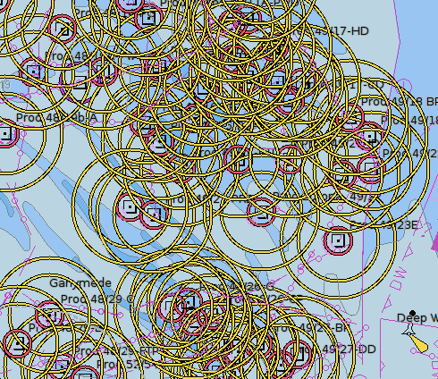
Das ist sehr unübersichtlich und so wollen wir alle roten und gelben Kreise los werden. Wir machen einen Rechts-Klick auf eines der Quadrate mit dem Punkt und lassen uns die Objekt-Eigenschaften anzeigen.
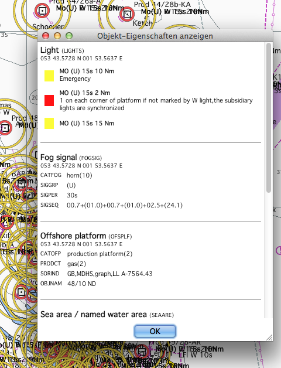
Oben finden wir die Klasse LIGHTS und suchen Leucht-Feuer in der Liste der Benutzerdefinierten Auswahl.
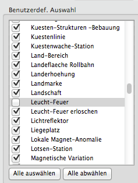
Leucht-Feuer wird deaktiviert.
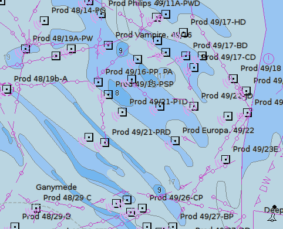
So sieht es dann schon besser aus!
Für diesen Fall gibt es auch einen Kurzbefehl, mit "L" werden alle "LIGHTs" an- oder ausgeschaltet.
Tiefenangaben anzeigen
Schaltet die gemessenen Tiefen an oder ab. Andere Einstellungen sind bei angezeigten Tiefen ebenfall betroffen, z.B. SCAMIN. Die schwarz-dunklen Zahlen sind keine Tiefen. Es sind Höhen von nahen Inselchen oder Riffe. In offiziellen Papierkarten sind Tiefen kursiv gedruckt.
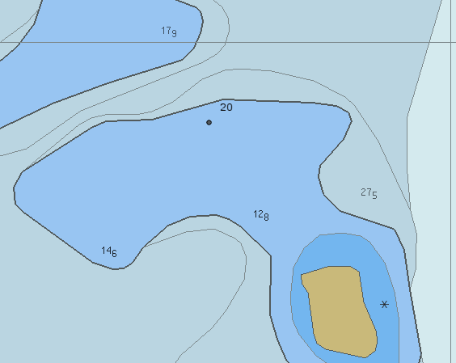
Die fette Nummer 20 gehört zur Landhöhe des unbenannten Riffs südwestlich von der Zahl.
Sicherheitstiefe ist auf 20 m gesetzt, so daß alle Tiefen größer 20 grau sind und alle Tiefen mit weniger als 20 m sind schwarz.
Karten Informations Objekte anzeigen
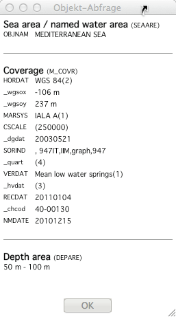
Bezieht sich auf die Information über die Karte selbst (Coverage). Eingeschaltet ergibt eine Objektabfrage Informationen wie Betonnungssystem für das Gebiet und die Qualität.
Nur wichtigen Text zeigen
Zeigt nur noch den wichtigsten Text zur Navigation wie Kurs und Richtung und dergleichen.
Reduziertes Detail bei kleinem Maßstab verwenden
Stellt sicher, daß Objekte nur in einem relevanten minimum scale (minimaler Skalierung) angezeigt werden. Ohne SCAMIN wird alles gezeigt, was bei kleiner Skalierung (Zoom Aus) zu einer sehr unübersichtlichen Ansicht führt.
Bojen/Feuer Kennungen, Namen anzeigen
Zeigt Namen und Bedeutung von Aid To Navigation (ATON) wie Nummer oder Name der Boje, Information über verdächtige Objekte usw.
Leuchtfeuer-Kennungen anzeigen
Kontrolliert die Anzeige von Leuchtfeuer Charakteristika. Eingeschaltet wird ein Label mit Text der Beschreibung des Leuchtfeuers angezeigt.
Erweiterte Sektorenfeuer
In Vektor-Karten kann man oft schwer die Sektoren erkennen.
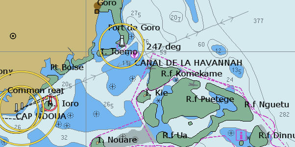
Mit dieser Aktivierung wird es klarer. Alle Sektoren sind erweitert und und der führende weiße Sektor erhält eine gelbe Markierung. Zum Aktivieren halten Sie den Cursor über das Feuer.
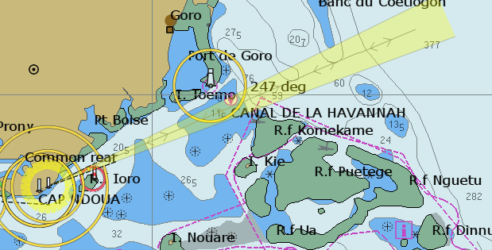
Text "aufräumen"
Selbst bei der Verwendung von SCAMIN gibt es Fälle, in denen Text Labels überlappen oder andere Labels überschreiben und damit eine unübersichtliche Anzeige bringen. Das soll mit dieser Checkbox besser werden. Um alle Labels zu sehen, vergrößern Sie die Anzeige.
Kartendarstellungs-Stil
Punkte
"Papierkarte" zeichnet Seezeichen und Leuchtfeuer wie die gedruckte Papierkarte, während "Vereinfacht" Symbole dazu verwendet. Beides ist Geschmackssache.
Der Papierkarte Modus lehnt sich an den IHO Standard für dieses Gebiet an. Dieser Modus ist momentan weiter entwickelt als der
Vereinfacht Modus, da er eine höhere Entwicklungspriorität hat.
Kartengrenzen
"Schlicht" verwendet normalerweise eine gestrichelte Linie, während "Symbolisch" auch Triangel in dem Bereich benutzt.
Farben
Die Tiefen auf der Karte können entweder mit 2 oder 4 Farben dargestellt werden. Diese Einstellung ist von den Tiefeneinstellungen abhängig. Mit 2 Farben und einer relativ großen Skalierung sind Gebiete mit einer Tiefe weniger als die Sicherheitstiefe blau, der Rest ist weiß. Mit 4 Farben gibt es verschiedene Farben für Gebiete weniger als Flachwassergrenze, Gebiete zwischen Flachwassergrenze und Sicherheitstiefe, Gebiete zwischen Sicherheitstiefe und Tiefwasser und schließlich Gebiete tiefer als Tiefwasser.
CM93 Zoom Detail
Normale Einstellungen sind eine Kombination von eigenen Vorlieben und der augenblicklichen Verwendung der Karte. Um mehr Details zu sehen,
kann "Zoom Detail" auf eine höhere positive Zahl gesetzt werden oder zur Navigation in Schiff-Fahrtsstraßen auf auf eine negative
Zahl. Typischerweise ist der Zoom Level 5 gut zum Fischen, wenn so viele Details wie möglich interessieren. Zoom Level +1, 0 oder -1
sind gut für den normalen Gebrauch.
Positive Werte ergeben mehr Details, aber auf Kosten von:
a. Es dauert länger, größere Maßstäbe eines Screen Bereichs anzuzeigen.
b. Es gibt mehr graue (NODATA) Gebiete in großen ausgezoomten Karten, wenn kein Quilting aktiviert ist.
c. Es kann dramatisch langsam werden, wenn viele Details spezifiziert sind und Karten Outline gefragt ist. In dem Fall muß das
Programm sehr viel mehr Zellen lesen, um ihre Outlines zu bekommen.
Entsprechend gibt ein negativer Wert weniger Details. Zooms sind schneller.
Ist Quilting abgeschaltet, kann der Schieberegler auch mit dem Rechts-Klick Kontextmenü erreicht werden und erscheint direkt auf dem Bildschirm.
Tiefeneinstellungen
Beeinflußt die Färbung des Wassers als eine Funktion der Tiefe. Durch Setzen der richtigen Sicherheitstiefe und Tiefwassergrenze
haben Sie eine sichtbare Grenze, ab der Sorgfalt bei Flachwasser geboten ist. Es gibt jedoch keine allgemein gültigen Einstellungen.
Zum Beispiel sollte eine Untiefe von 20 m mitten im Ozean als Flachwasser angesehen und gemieden werden, während eine Tiefe von 20 m
in der Hafeneinfahrt in geschütztem Gewässer mit Sicherheit gefahrlos ist.
CM93 Karten und S57 ENCs arbeiten in diesem Bereich sehr ähnlich. Die Karten enthalten Tiefengebiete Funktionen entsprechend fester
Tiefenzonen, üblicherweise 5, 10 und 20 Meter. In den Daten sind keine Zwischenwerte enthalten, so daß bei einem Wert dazwischen
OpenCPN den nächst höheren verfügbaren Wert zur Farbanzeige wählt.
Die Karten sind jedoch in diesem Bereich inkonsistent, abhängig vom Land, das die ursprüngliche Karte geliefert hat. So sind
z.B. die Tiefenkonturen in CM93 in Großbritannien und den Niederlanden 2, 5 und 10 Meter, während sie in Schweden 3, 6 und 10 Meter
sind.
Allgemein findet man die festen Tiefengrenzen sowohl bei S57 ENC als auch bei CM93 mit Rechts Klick -> Objekt Query -> Karte -> Tiefenbereich.
Die zwei Werte DRVAL1 und DRVAL2 stehen für die eingebauten Werte.
Hat z.B. - wie bei den Südchinesisches Meer Karten von Hydrographic Commissions - das Flachwasser-Gebiet DRVAL1 = 0 m und DRVAL2 = 10 m,
dann gibt es keine Möglichkeit, Flachwasser auf einen anderen Wert als 10 m zu setzen.
Finden Sie diese Tiefengrenzen für Ihr Gebiet heraus und bestimmen Sie die Tiefeneinstellungen mit diesem Wissen und Ihren Bedürfnissen.
Nach diesen Vorbemerkungen wird der allgemeine Fall mit 4 Farben beschrieben.
Flachwassergrenze
Färbt alle Wassergebiete mit Wassertiefen flacher als die gesetze Tiefe auf dunkel blau. Tiefenangaben sind in schwarz.
Sicherheitstiefe
Wasser tiefer als Flachwasser, aber flacher als diese Tiefe bekommt eine hellere blaue Farbe. Die Flachwasser-Tiefengrenze erscheint klar als dunkel graue Grenzlinie. Tiefenangaben geringer als diese Tiefe sind in schwarz, Tiefenangaben mit größerem Wert sind in grau.
Tiefwassergrenze
Wasser tiefer als die Sicherheitstiefe, aber geringer als Tiefwasser wird in einem hellen Grau angezeigt. Die Sicherheits-Tiefengrenze ist klar als schwarze Linie gezeichnet. Wasser tiefer als Tiefwasser erscheint in weiß.
Schließlich noch ein Wort über trockenfallende Höhen, angezeigt in grün. Es gibt keine detaillierten Informationen für die Werte von trockenfallenden Gebieten für OpenCPN, weder in CM93 noch in S57 Karten. Rasterkarten scheinen die einzige Alternative für die Navigation in flachen Gebieten mit großer Tide zu sein.
Hoffentlich ändert sich das. Ein neuer niederländischer Kartensatz vom April 2012 könnte hier Maßstäbe setzen:
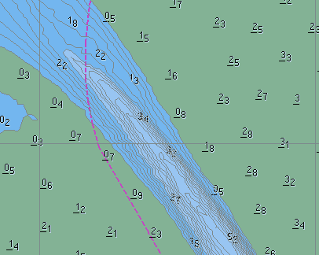
Im Unterschied zu CM93:
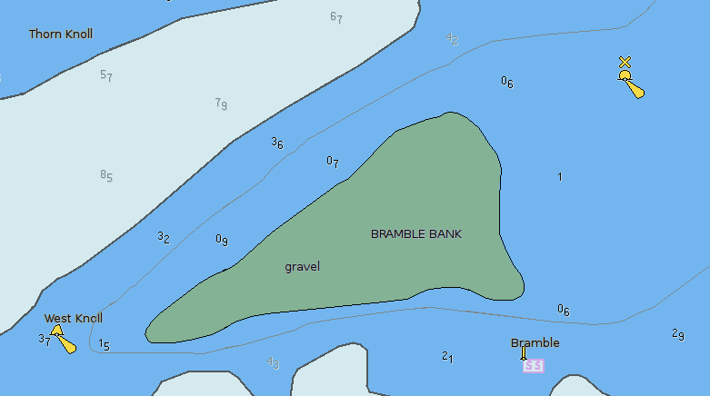
Wann ist es sicher über die Bramble Bank zu fahren? Die Vektor Karte gibt uns keinerlei Informationen, weder auf der Karte noch im Informations Dialog.
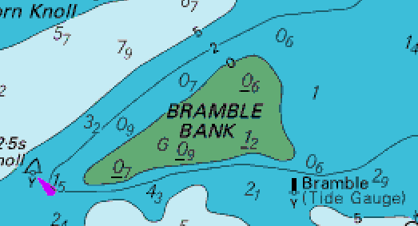
Während eine Raster Karte uns erzählt, daß wir eine Tidenhöhe von 1,20 m benötigen plus Sicherheitsabstand und plus Tiefe unseres eigenen Schiffs.
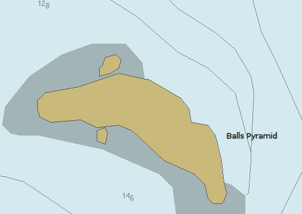
Dies ist ein allgemeiner Ausschnitt, wo Höhen von Inseln usw. nicht verfügbar sind. Ist Balls Pyramid eine hohe Insel, wie der Name vermuten läßt, oder hat der Name den gleichen sarkastischen Humor wie der Name "Grünland" (Grönland)?